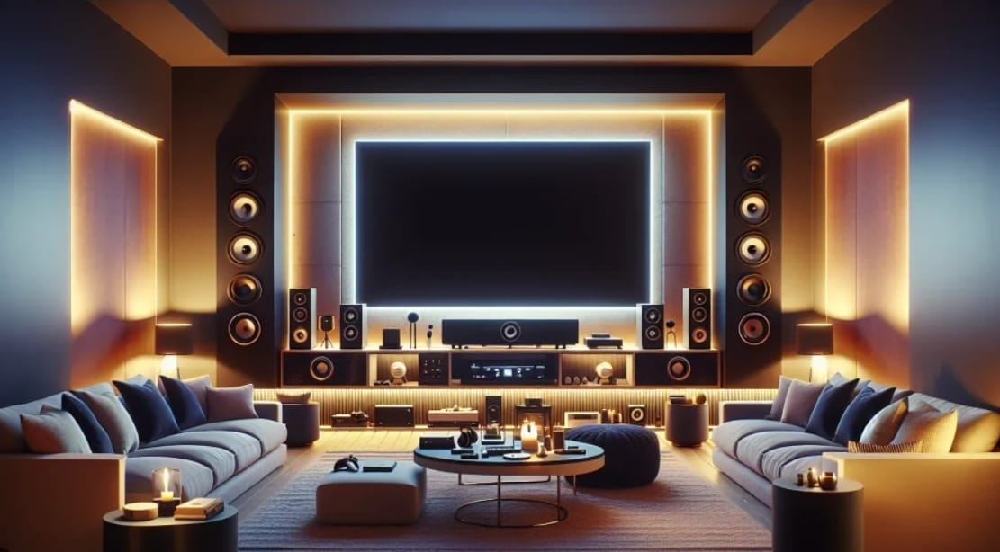

What is smart home entertainment ?
Definition :
Enhance the home entertainment experience throughout the home, nclude smart TVs, audio systems, streaming devices, projectors, and lighting and ambiance controls that integrate for a more immersive experience.
Benefit :
Provide convenience, personalization, and a heightened level of enjoyment by being able control and automate a wide range of media devices and content.
Description & Application :
Background Music (BGM) System / Integrated Audio System :
A multi-room audio system with speakers and strategically placed throughout the villa, allowing for synchronized music playback, voice control, and personalized audio experiences.
To complement the visuals, integrating an audio system can significantly enhance the immersive media experience. Soundbars, surround sound systems, or home theatre systems deliver high-quality audio that fills the room, creating a more cinematic feel.
Weatherproof outdoor speakers connected to a multi-zone audio system for music and entertainment in outdoor areas like patios, balconies, and pool areas.
Sauna Controller Integration :

Sauna controller without Evaporator. With this Function Block a sauna can be optimally automated. All standard Sauna heaters can be controlled (switching of the heating elements, as well as analog control via 0-10 V signal).